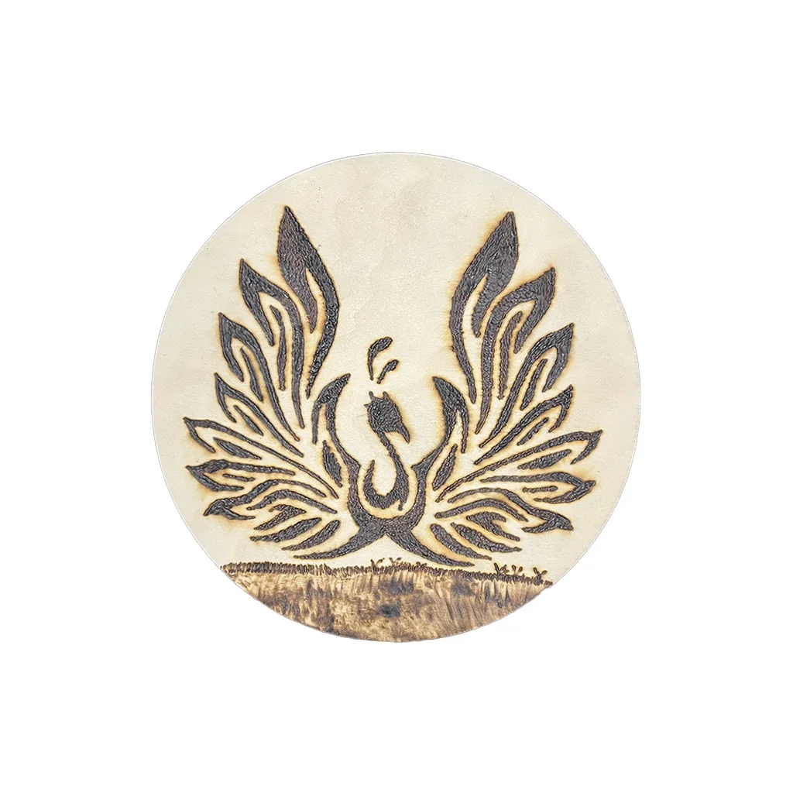

Alas abiertas · Fotografía del producto real
Cada modelo se muestra primero en una fotografía del producto real y después en una representación ambientada con IA.
Pirograbado artesanal en madera
Colección Fénix
Tres modelos disponiblesTres interpretaciones del ave fénix realizadas mediante pirograbado sobre piezas circulares de madera.
Consultar precio
Consulta disponibilidad, medidas y condiciones de cada modelo.
- Alas abiertas: figura frontal con las alas elevadas.
- Fénix simétrico: composición centrada con las alas extendidas.
- Vuelo sobre montañas: figura de perfil integrada en un paisaje.
- Tipo
- Pirograbado decorativo
- Material
- Madera
- Formato
- Piezas circulares
- Modelos
- Alas abiertas, Simétrico y Vuelo
- Medidas
- Consultar
Sobre la colección
Un símbolo, tres composiciones
Los modelos comparten el motivo del fénix, pero se diferencian por la posición de las alas y la composición. Más adelante podremos añadir el significado de cada diseño, dimensiones, tipo exacto de madera y proceso de elaboración.